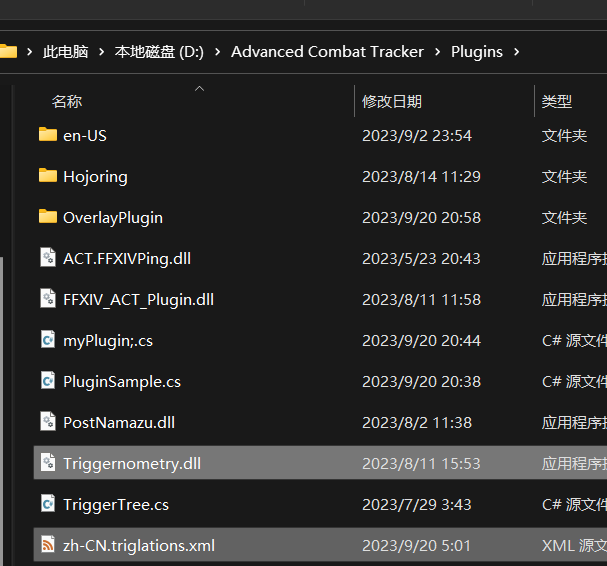
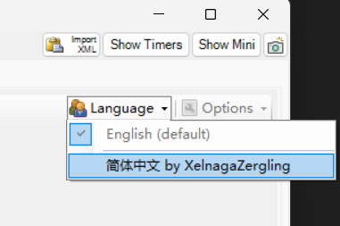
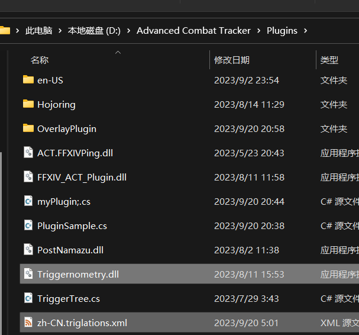
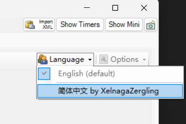

ACT Triggernomety插件 自用简体中文翻译 说明 使用方法
注意：此文章写于2023年8月12日20点17分，内容可能过时。
如何使用？
1.找到你act放Triggernomety插件的地方，然后将Triggernomety和翻译文件放在一起，如下图所示：

2.在Triggernomety插件页面右上角选择语言。

下载
点击→下载
注意：此文章写于2023年8月12日20点17分，内容可能过时。
1.找到你act放Triggernomety插件的地方，然后将Triggernomety和翻译文件放在一起，如下图所示：

2.在Triggernomety插件页面右上角选择语言。

点击→下载